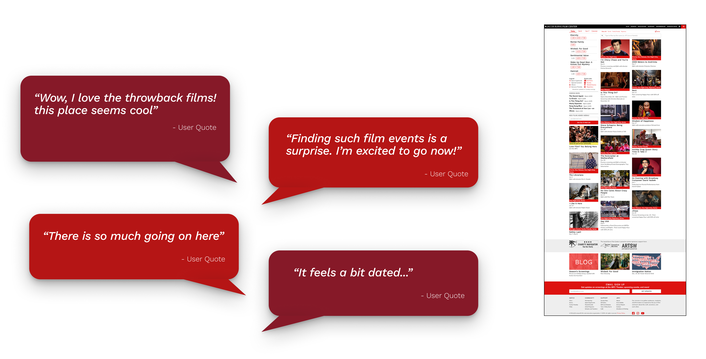
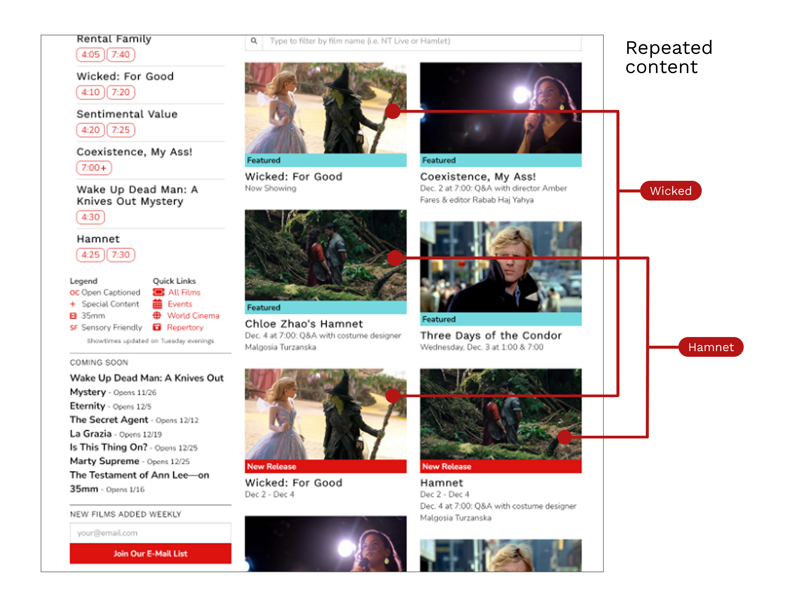
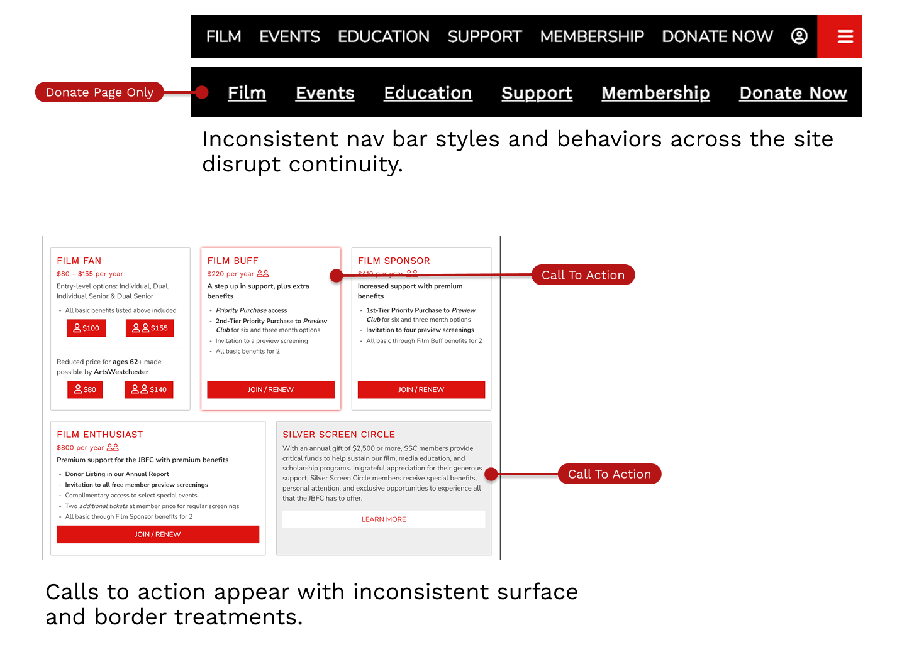
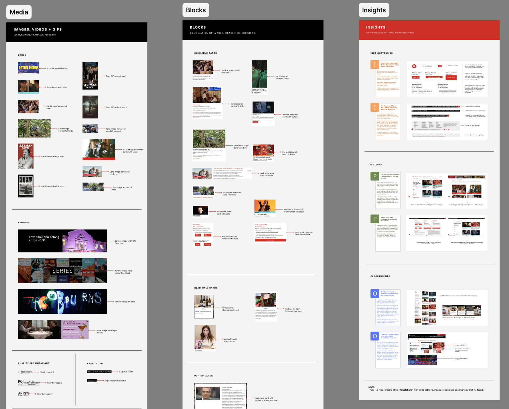
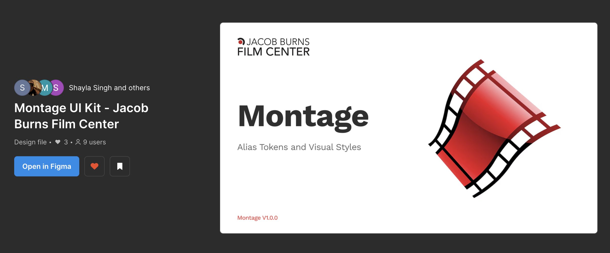

Montage Design System
Making consistency easier
Overview
Jacob Burns Film Center is a non-profit cultural hub where films meet people, and where stories shape communities. The JBFC website had grown without a formal design system. Some UI patterns existed, but they weren't shared or documented, leading to inconsistencies that can be seen across the website.
My team and I created JBFC's first design system, Montage, to help translate an interface into something clear, reusable, and accessible.

The problem
Design decisions were being made repeatedly across JBFC's website. Accessibility varied by screen and there was no single source of truth.
Without a shared system, consistency depended on individual memory rather than structure.
My role
I worked as a Designer on a small team creating JBFC's first design system. My focus was on:
- Translating existing UI decisions into clear foundations (tokens, styles, variables)
- Building reusable components (UI Kit)
- Shaping accessibility rules and documentation
I approached the system as both a designer and a user, making sure the design system was something I'd actually want to use in my own work.
Starting with what already existed
Before designing anything new, we stepped back and looked at what JBFC already had.
We created a UI inventory of all the current colors, typography, buttons, forms, and layouts across the website. Seeing everything side by side made patterns (and problems) impossible to ignore.This step grounded every decision that followed. We found:
Dense content with overcrowded layouts and poor hierarchy:

Misalignment of content blocks creates a jarring reading experience:

Repetitive content adds noise and dilutes key information.:
Mixed styles & inconsistent navigation:
A snippet of the UI inventory:
Principles before components
Before building anything new, we defined a small set of design principles to guide decisions.
They helped us:
- Resolve disagreements without personal bias
- Keep accessibility front-of-mind
- Prioritize clarity over decoration
When something felt off, the principles helped align our design decisions as a team.

Building the foundation
Next we focused on the basics:
- Accessible color tokens
- Clear hierarchy of typography
- Consistent spacing and layout rules
Using tokens allowed us to assign meaning to styles making decisions easier to maintain and communicate.
Initial explorations of design token naming conventions
Team ideation
Color tokens defined as variables in our UI Kit with semantic naming
Spacing system applied with examples for layout margins and padding
Components that scale
From there, we built a set of components in a published Community UI Kit:
Each component was designed with our design tokens, variations, and accessibility considerations (focus state, target sizes, etc.). We provided enough guidance to support flexibility without over-prescribing use.
Card component with variants
Button elements with keyboard accessible states
Documentation matters
A system only works if people understand it.
We treated documentation as a core part of the design system, not an afterthought:
- A clear starting point
- Short, scannable guidance
- Accessibility rules that empower rather than constrain
I focused on writing documentation the way I'd want to read it direct and easy to skim. Montage Documentation:

Getting started guide
Accessibility guidelines on target size for interactive elements

Component guidelines overview page

Component guidelines with anatomy and usage best practices
The result
Montage provides JBFC a shared source of truth:
- A Figma UI kit grounded in design tokens and patterns
- Clear foundations and reusable components
- Principles and documentation that support better decisions
Montage as a design system does not replace thinking, it aims to removes friction.
What I learned
Design systems aren't about control. They're about trust.
When decisions are shared and explicit, teams can move faster not because they think less, but because they focus on the right problems.
What's next
If this work continued, I'd focus on:
- Testing the documentation itself
- Expanding components based on real product needs
- Closer collaboration with developers
Final reflection
JBFC's design system isn't finished and it shouldn't be.
It's a living product shaped by the people who use it. Building it taught me that the hardest part isn't creating components, it's creating shared understanding.